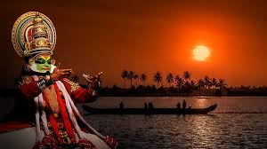
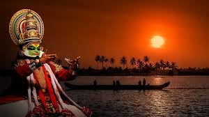

Kerala is also known for its Beautiful hill stations. Some popular hill stations to visit include Munnar, Wayanad, and Thekkady. Take a walk through the tea plantations, enjoy the cool mountain air, and take in the beautiful views of the surrounding landscape. Kerala is also known for its beautiful temples and palaces.
 
